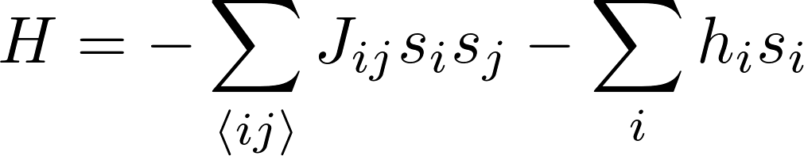

Create an Ising Graph and find the Energy Spectrum!
The weights on the graph are the J and h coefficients in the Hamiltonian:

Left click to create node or edit weights. Left-click two nodes to create edge.
Right click to remove node or edge.